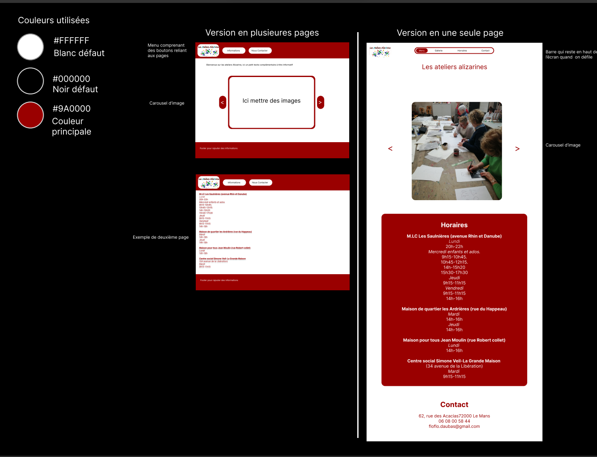
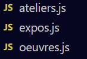
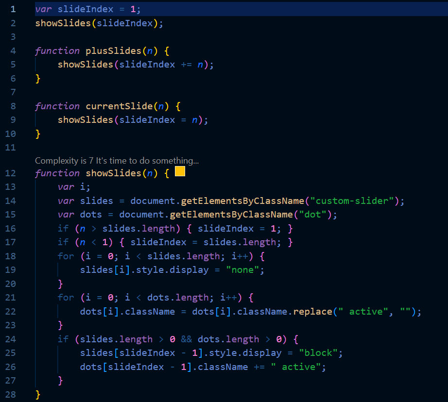
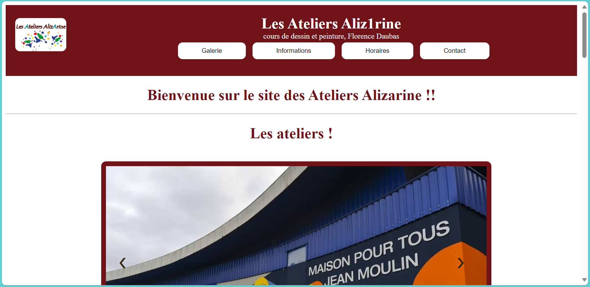
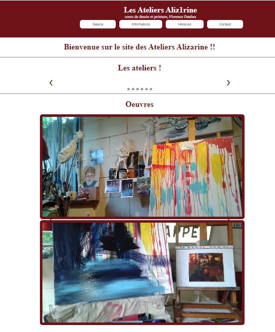
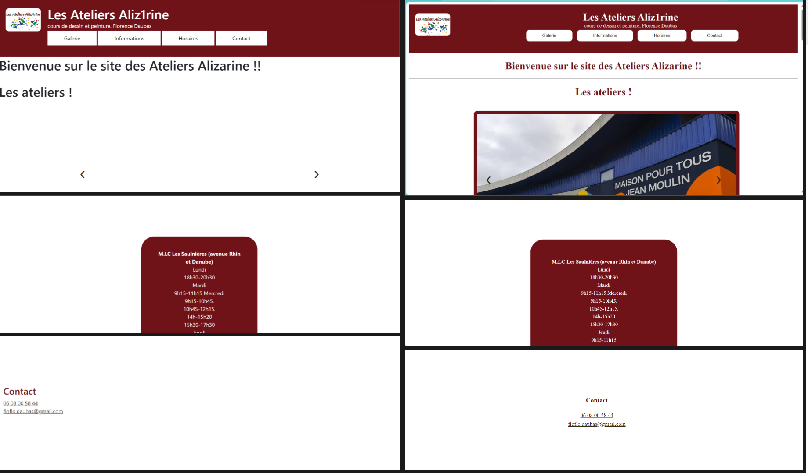
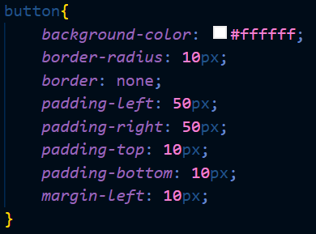
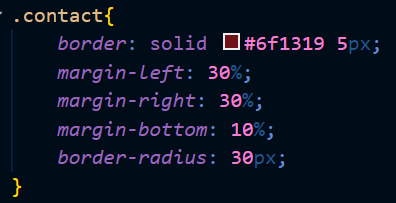
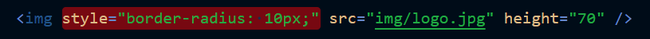

Portfolio de BTS SIO
Portfolio de BTS SIO
Tout d'abord il a fallut faire un plan de comment allait se dérouler le stage,
Mise en place
il faut savoir les différents type de contnu à mettre sur le site et sous quelle forme (images, vidéos etc...)
Savoir quels logiciels et quels langages de programmations uttiliser.
Pour ce stage on va donc uttiliser Visual Studio code pour programmer, ainsi que Figma pour faire des maquettes, mais aussi git afin de sauvegarder chaque version.
Maquettes
On a désormais les élements à placer, a savoir:
- les horraires
- La gallerie
- Text informatif
- Contact
Maintenant il faut savoir comment les arranger, donc on va les placer dans cet ordre:
Galerie doit être visible en premier pour voir l’association
Texte en second afin d’apporter un contexte
Horaires ensuite afin de voir si cela correspond au visiteur
Contact si le visiteur est conquis il n’a plus qu’a contacter
Voici donc la maquette crée sur figma, avec deux version, une en plusieures page et une en onepage.

Prototypes
On va ensuite créer des prototypes pour chaque version en html, css et javascript.
Car j'ai eu l'idée de mettre les images dans des caroussels d'image, je dois donc ton coder en JS.
Il y a 3 caroussels en fonction du thème del'image, j'ai donc crée 3 fichiers javascript en fonction du caroussel.

cependant je suis tombé sur quelques soucis, concernant les caroussels faits en Javascript,
tout d'abord ceux-ci contient du code compliqué, il a quelques bug qui me prennent du temps a régler et en plus de cela
il y a pas mal de risque de conflit entre les caroussels
(exemple du code du caroussel)

Mise en forme
Je suis allé voir mes tuteursafin de confirmer que les protoypes leur plaisaisaient bien et lequel choisisaient-ils
afin que je puisse commencer la version finale. Ils ont décider de prendre la version onePage.
voici le haut de page, à noter que c'est qu'une première version

Cependant je me suis rendu compte que gerer les caroussels etaient trop compliqué, cela créait beaucoup de bugs,
voici en un par exemple un bug qui déplace les caroussels sur la page

Passage à Bootstrap
Suite à tout ces problèmes j'ai décidé d'uttiliser le framework Bootstrap. Cela comporte des avantages
mais aussi des désavantages dont voici la liste
Avantages:
Moins de complexité sur certaines mise en forme et certains objet
Code mieux organisé
Désavantages:
Tout le code doit être revu et beaucoup doit être changé
Donc comme dit dans les désavantages, tout doit être repris depuis le début car une grosse partie
du css ne fonctionne plus
Voici à gauche le résultat de l'ajout de Bootstrap et à droite une fois que tout a été retravaillé:

J'ai donc réorganisé le code, une partie dans le style.css et une autre directement
dans le html.css
Quand cela concerne plusieurs éléments du html ou qu'il y a trop de code pour être dans le html,
on met ça dans le css, exemple:
Ici cela concerne trop d'elements (tout les boutons)

Là il y a trop de code pour etre dans le html

Et quand cela concerne seulement un seul élément et qu'il y a peu de code on peut le mettre directment
dans le html

Finalisation
Ensuite je suis allé sur les lieux de stage afin de prendre des photos pour alimenter le site,
j'ai fais aussi pas mal de rendez-vous avec mes tuteurs afin d'ajouter et supprimer des choses sur le site
J'ai mis en ligne le site avec une adresse que mes tuteurs ont acheté puis fais le SEO avec des balises html et sur google console
Le site est désormais diponible à cette adresse ateliersalizarine.fr